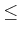
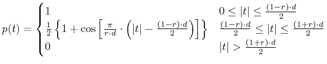
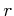
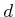
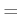
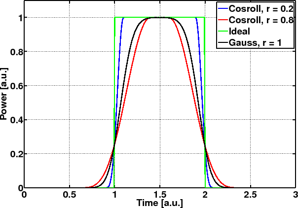

electricsource
Create the electric modulating signal.
ELEC=ELECTRICSOURCE(PAT, FORMAT, SYMBRATE, PTYPE, DUTY, ROLL)
ELEC=ELECTRICSOURCE(...,INPOW, ...)
ELEC=ELECTRICSOURCE(..., ORD, ...)
ELEC=ELECTRICSOURCE(..., PAR, ...)
ELEC=ELECTRICSOURCE(PAT, FORMAT, SYMBRATE, PTYPE, DUTY, ROLL)
returns in ELEC the electric signal which is passed to one
input of the modulator, using the pattern PAT, created using
the pattern function.
ELECTRICSOURCE acts on a per channel basis, so if you want
to create the driving signals for a N-channel WDM system you have
to call ELECTRICSOURCE N times. FORMAT is a string
that described the modulation format. The supported formats are (see
the Glossary for a list of acronyms):
- 'ook' (using mz_modulator):
lower/upper values of the electric signal are 0 and 1.
- 'bpsk' (and thus 'dpsk' and 'nf-dpsk',
using mz_modulator or phase_modulator):
lower/upper values of the electric signal are -1 and 1.
- 'psbt' (using mz_modulator):
lower/upper values of the electric signal are -1 and 1. You can also
specify two fields in the structure of parameters PAR to
model the electrical filter:
- par.efilt = electrical filter type (default: 'bessel5')
- par.efiltbw = electrical filter bandwidth (default: 0.3)
- 'qpsk' (and thus dqpsk and nf-dqpsk): lower/upper
values of the electric signal are -1 and 1. Only the driving signal
for one of the two quadratures is created and thus ELECTRICSOURCE
must be called twice to get the required inputs of qi_modulator.
- 'userdef': a custom electric signal is generated: the user
must specify the following fields of the structure PAR:
- PAR.alphabet = size of the alphabet of PAT
- PAR.limits = a [2x1] vector containing lower
and upper values of the generated signal. Symbols are assumed equally
spaced
OR
- PAR.ampls = an [PAR.alphabet,1] vector containing
amplitudes associated to every symbol of PAT
SYMBRATE is the signal's baudrate in [Gbaud], and it
is associated to the global variable GSTATE.SYMBOLRATE. PTYPE
is the pulse type used to create the electric signal. It can be one
of the following strings:
- <string used in myfilter>: filters an ideal
signal with the correspondent filter in MYFILTER. In this
case ROLL is the 3dB bandwidth and ORD is the order
for special filters.
- 'cosroll': Pulses with a raised cosine behavior during the
commutation states. In this case 0ROLL1 indicates
the roll-off. The elementary pulse assumes the form [4]:

where  is the roll-off and  the duty cycle
- 'dirac': Dirac's delta pulses. 'idpulse': Ideal
pulses with only two levels. Do not confuse with the string 'ideal'
which calls for the ideal filter in myfilter.
- 'sech': Bright solitons (still to be implemented)
- 'tanh': Dark solitons (still to be implemented)
ROLL must be always declared. If you don't need ROLL,
set it, for instance, equal to the empty variable, i.e. ROLL[].
DUTY is the duty-cycle, and must be 0DUTY1.
ELEC=ELECTRICSOURCE(...,INPOW, ...) , INPOW is set to 'power',
allows to do the pulse shaping on the signal's power (abs(.)^2);
otherwise the shaping is done on the electric field.
ELEC=ELECTRICSOURCE(..., ORD , ...) is used to specify the
order ORD of the special filter employed to shape the pulse.
ELEC=ELECTRICSOURCE(...,PAR, ...) is used in conjunction
with PSBT modulation. It is a structure used to define the
type of filter and its bandwidth used at the transmitter side.
Fig. 2.1 shows the electric signal for
an OOK modulation using the pattern '010' and duty-cycle
1, for some different types of pulse.
Figure 2.1:
Electric signal obtained using ELECTRICSOURCE with four different
type of pulse.
|

|
pattern, mz_modulator,
lasersource
A detailed analysis of DPSK and QPSK modulation formats is available
in [5]. PSBT and Enhanced PSBT (EPSBT) are described
in [6,7,8]. NF-DPSK was presented in
[9] and analyzed in [10,11].
Finally NF-DQPSK was proposed in [12].
Optilux toolbox reference manual